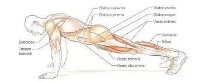

Técnica · En casa · 15 de junio de 2021
Escaladores (mountain climbers)

Escaladores (Mountain Climbers)
Resumen sobre los Escaladores:
Los Escaladores son un ejercicio de cuerpo completo que combina fuerza, cardio y resistencia, ideal para incluir en cualquier rutina diaria, ya sea en casa, al aire libre o de viaje, ya que no requiere equipo. Este ejercicio trabaja múltiples grupos musculares, activa el metabolismo y ayuda a quemar calorías de forma efectiva.
Músculos trabajados:
Como mencionaste, los principales músculos que se benefician son:
- Core: Recto mayor del abdomen y oblicuos (para estabilizar el cuerpo).
- Tren superior: Hombros, tríceps y pecho (al sostener la posición de plancha).
- Tren inferior: Piernas (cuádriceps, isquiotibiales) y glúteos (en menor medida). Este ejercicio también mejora la coordinación y fortalece el sistema cardiorrespiratorio.

Cómo realizar los Escaladores (técnica):
- Posición inicial:
- Adopta una posición de plancha alta, con las manos separadas un poco más ancho que los hombros, directamente bajo estos.
- Mantén el cuerpo en línea recta desde la cabeza hasta los talones, con los dedos de los pies apoyados en el suelo.
- Activa el core para evitar que las caderas se hundan o se eleven.
- Ejecución:
- Lleva una rodilla hacia el centro del estómago (o pecho) sin mover el resto del cuerpo.
- Alterna rápidamente las piernas, extendiendo una mientras la otra se flexiona hacia el estómago.
- Mantén un ritmo constante y controlado, como si estuvieras corriendo en posición de plancha.
- Duración y series (según nivel):
- Principiantes: 3 series de 20 segundos, con descansos de 20-30 segundos entre series.
- Intermedios: 3-4 series de 30 segundos, con descansos breves.
- Avanzados: 3-4 series de 60 segundos, o incluso más, según resistencia.
- Ajusta el tiempo o las repeticiones según tu nivel de condición física.
- Adopta una posición de plancha alta, con las manos separadas un poco más ancho que los hombros, directamente bajo estos.
- Mantén el cuerpo en línea recta desde la cabeza hasta los talones, con los dedos de los pies apoyados en el suelo.
- Activa el core para evitar que las caderas se hundan o se eleven.
- Lleva una rodilla hacia el centro del estómago (o pecho) sin mover el resto del cuerpo.
- Alterna rápidamente las piernas, extendiendo una mientras la otra se flexiona hacia el estómago.
- Mantén un ritmo constante y controlado, como si estuvieras corriendo en posición de plancha.
- Principiantes: 3 series de 20 segundos, con descansos de 20-30 segundos entre series.
- Intermedios: 3-4 series de 30 segundos, con descansos breves.
- Avanzados: 3-4 series de 60 segundos, o incluso más, según resistencia.
- Ajusta el tiempo o las repeticiones según tu nivel de condición física.
Consejos prácticos:
- Calidad sobre cantidad: Prioriza la técnica para evitar lesiones. Mantén la espalda recta y evita rebotar.
- Respiración: Respira de forma controlada, exhalando al llevar la rodilla al pecho e inhalando al extender la pierna.
- Superficie: Realiza el ejercicio en una superficie estable (como una colchoneta) para mayor comodidad en manos y pies.
- Progresión: Si eres principiante, empieza despacio y aumenta el tiempo o la intensidad gradualmente.
- Variaciones:
- Escaladores cruzados: Lleva la rodilla hacia el codo opuesto para trabajar más los oblicuos.
- Escaladores con deslizamiento: Usa discos deslizantes o toallas para aumentar la intensidad.
- Escaladores en suspensión: Coloca los pies en una banda TRX para un desafío adicional.
- Escaladores cruzados: Lleva la rodilla hacia el codo opuesto para trabajar más los oblicuos.
- Escaladores con deslizamiento: Usa discos deslizantes o toallas para aumentar la intensidad.
- Escaladores en suspensión: Coloca los pies en una banda TRX para un desafío adicional.